Five ordinary jobs
that quietly eat the week.
The first one matters most. A slow reply isn’t untidy admin — it’s someone who asked for help, still waiting.
- Answering people faster. When a shared inbox is triaged and drafted for you, the person who reached out hears back today instead of next week.
- Thanking the people who give. Donor thank-yous and follow-ups written from the spreadsheet you already keep.
- Reporting without the dread. First drafts of grant and impact reports, built from documents you’ve already written.
- Filling the rota. Volunteer and shift scheduling that doesn’t live in three WhatsApp groups.
- Speaking your community’s languages. Materials translated properly, instead of left in one language because there was no time.
Not all five will apply to you. Working out which ones do is what the two hours are for.
What the two hours
actually look like.
You send a short note
A few lines on what your organisation does and what’s slowing you down, so we don’t spend the first half hour on introductions.
We walk through your week
Not a demo. We go through the week as it actually happens — who does what, where things stall — and find the three places AI would help most, and the places it wouldn’t.
You keep the plan
A written summary and a priority order, in plain English. It’s yours to act on, hand to a trustee, or ignore.
Three things,
none of them a bill.
A written starting point
The three places AI would save you the most time, in priority order, with what each one would take to set up.
A page that explains you clearly
A refresh of the site you already have, so people can understand who you are and how to reach you. Copy and layout — not a rebuild you don’t need.
One place for relationships
A simple CRM, set up so contacts, conversations and follow-ups stop living in inboxes and spreadsheets. Free to run, and yours to keep.
All three are free for the first organisations I work with.
Hi, I’m Benji.
Previously at monday.com, where I helped enterprise teams work out where AI belonged in how they already worked.
The hard part was never the technology. It was understanding how a team actually works before changing anything — and that’s the work I care about most.
Charities are rarely offered that kind of attention, and it’s where it goes furthest. A team of four with the right systems can do what used to take a department.
I’m based in East London and work with organisations anywhere.
Find me on LinkedIn
The things people
ask first.
Why is it free?
Because I’d rather show you this is useful than tell you. I’m building this practice in the charity sector, and I’m doing the first organisations for nothing so I have real work to point to. After that it won’t be free — but nothing about your two hours changes either way, and there’s nothing to sign at the end.
We have nobody technical. Is that a problem?
No — that’s who this is built for. Most of the organisations I work with have nobody in a technical role. If you can describe how your week works, we have enough to start.
What if we have no budget and no CRM?
That’s the usual starting position, and it’s fine. Everything described here is free, and anything I set up is chosen so a small organisation can keep running it without me and without paying for it.
What do you do with our data?
In the two hours I only need to understand how you work — I don’t need to see your records, your donor list or your case files. If we go further and I do need access to something real, we agree in writing what I can see before I see it. Privacy policy.
What happens after the two hours?
You keep the written summary and the priority order. If you want help with any of it, we talk about that separately. If you’d rather take the plan and do it yourself, or do nothing at all, that’s a fine outcome.
Are we too small for this?
Small is the point. The smaller the team, the more of the week admin takes, and the more difference a few systems make. If you’re two people and a spreadsheet, you’re exactly who this is for.
Book two free hours.
Tell me what’s happening in your organisation and we’ll take it from there.
Book two free hoursOr email benji@beautifulmass.ai
